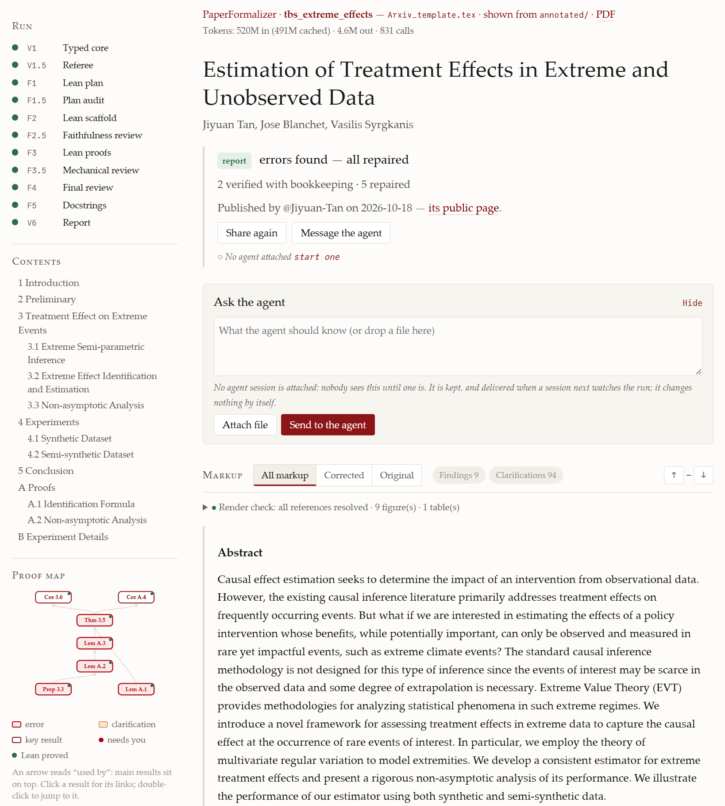
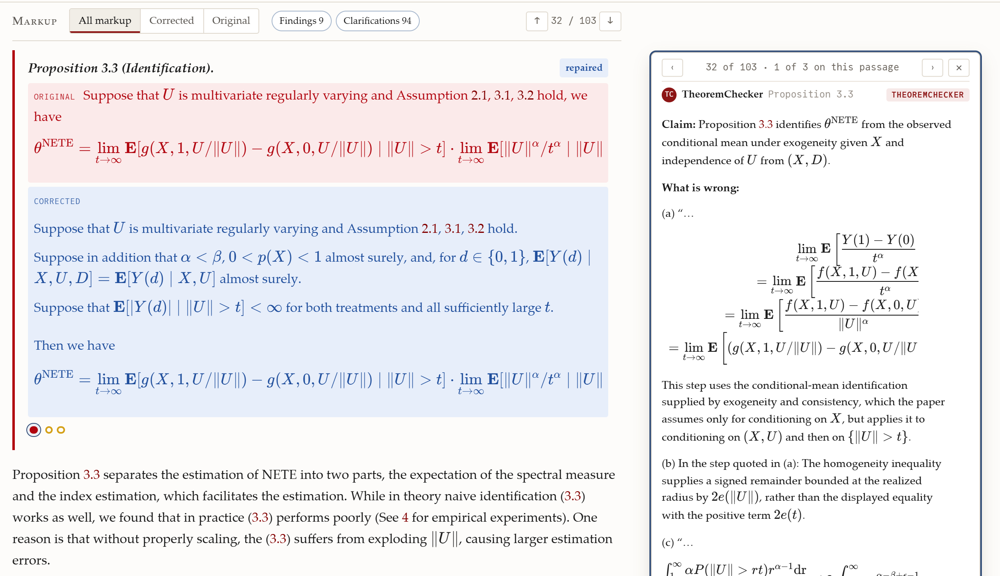
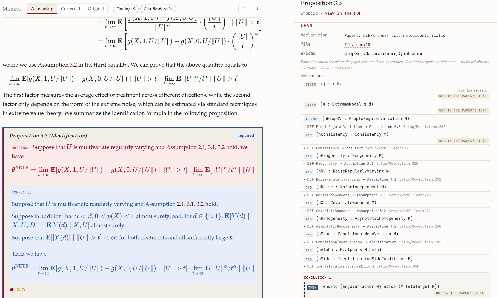

Agentic pipeline that autoformalizes research papers into Lean against Mathlib and domain libraries, with author-in-the-loop review and repair.
Abstract
Even a carefully proofread paper can leave small gaps in its proofs or its stated assumptions. We introduce PaperFormalizer, a Lean-based agentic pipeline that helps authors find and close such gaps in their own papers and turn each paper into a Lean-verified version. Starting from the LaTeX source, PaperFormalizer transcribes the paper into a dependency graph of statements, audits each statement in natural language for faithfulness, ambiguity and correctness, and then formalizes and proves the statements in Lean against Mathlib, optional domain libraries and the author's personal toolkit. Only the author knows what a statement is meant to say and how a formalization gap in a result is best fixed. The pipeline therefore stops and asks the author whenever a statement admits more than one reading, presents every repair, in natural language and TeX symbols, as a proposal that the author can accept, decline or redirect, and leaves to the author every decision that could potentially change what the paper claims. The output is an annotated and revised version of the paper, a report of the changes, and Lean code in which each declaration is linked to the statement it formalizes. The author's toolkit grows as more papers are formalized, and authors can share their verified papers so that researchers who build on them can reuse their Lean code. By making verified papers practical to produce, PaperFormalizer aims to make research that rests on mathematical proofs more robust. PaperFormalizer runs inside a coding agent (Claude Code or Codex) and is available at https://github.com/Jiyuan-Tan/PaperFormalizer. Papers with Lean code shared by users are available at https://paperformalizer.org.
Problem
Research papers with long technical proofs often contain small gaps, missing assumptions or false statements. Formalizing them in Lean by hand takes weeks. Automatic formalization cannot settle ambiguous readings or choose a repair that matches the author's intent.
Approach
PaperFormalizer runs inside a coding agent (Claude Code or Codex). It transcribes a paper's LaTeX source into a dependency graph of statements and reviews each statement in natural language for faithfulness, ambiguity and correctness. It then plans, scaffolds, proves and links Lean formalizations against Mathlib, domain libraries and a personal author toolkit. The author decides on ambiguous readings, on repairs that change main results, and on promotions of results into a growing toolkit, all through a local web viewer.

Figure 2: The page of the case-study paper (Section 5 ) after its run; the viewer carries the name of the public website, PaperFormalizer. The left column tracks the run’s stages (V1 is Stage 1, V1.5 Stage 2, F1–F1.5 Stage 3, F2 Stage 4, F2.5–F4 Stage 5, and F5–V6 Stage 6), gives the paper’s contents, and draws the proof map, in which an arrow reads “used by” and each result is colored by its revi
Results
In a case study on the authors' own paper about extreme treatment effects, all seven results were proved in Lean with no sorry, using Mathlib, Causalean and StatLean. Along the way the pipeline found that five of the seven results were false as printed and helped repair them. It also made 94 implicit readings explicit as clarifications.

Figure 4: Proposition 3.3 of the case-study paper on its page in the PaperFormalizer viewer. The printed statement is shown in red and the confirmed repair in blue; the card on the right gives the reviewer’s finding, quoting each step of the proof that fails. The dots under the statement open the other notes on this passage, here two clarifications.

Figure 5: The Lean statement of Proposition 3.3 next to the revised statement. Each hypothesis of the Lean theorem links to the assumption of the paper it formalizes (Assumption 2.1, 3.1 or 3.2, a clarification, or the proposition itself) and to its definition in the Lean files; pointing at a row highlights the matching phrase of the paper.